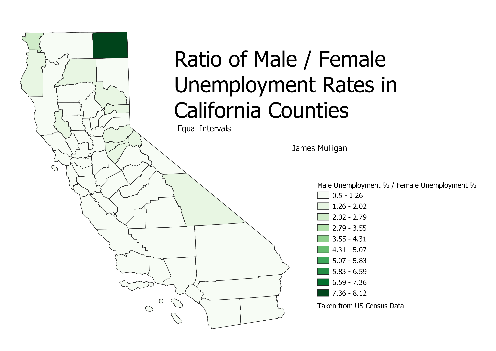

James Mulligan: Homework 8, Choropleth Ratios Project
Choropleth Using the UTM 10 North comparing Male and Female Unemployment with Natural Breaks

I chose to compare unemployment rates for Men and Women in California and present this as a unitless number. The natural breaks mode of displaying this data is by the far best for this data set because the data is highly clustered with some outliers. Most other modes of grouping group the majority of counties all into one category with only a few outliers, offering little informative information.
Choropleth Using the UTM 10 North comparing Male and Female Unemployment with Equal Counts (Quantiles)

The equal count mode of grouping the data is not ideal for the dataset because it groups counties with extremely different unemployment ratios together due to large spread. This makes it visually impossible to disitinguish between some counties with moderate ratios and those with extremelty high or low ratios.
Choropleth Using the UTM 10 North comparing Male and Female Unemployment with Equal Intervals

The equal intervals is better than the equal counts mode of displaying the data for this data set but not by much. Because there are relatively large outliers, the intervals are rather large, so while it does give a better representation of the actual values for counties, it is impossible to distinguish between many counties with similar ratios because they all fit into an overly large grouping. It would have been possible to add more groupings to add granularity, however to do so would necessitate at least twice as many groups as there are currently.
Data used for this project:
Shapefile of California Counties
Cleaned Census Data